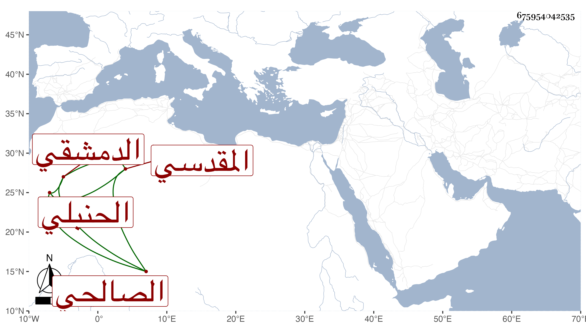

0902Sakhawi.DawLamic.ITO20230111-ara1.EIS1600.675954042535
Biography ID: 675954042535
248
أحمد بن محمد بن أحمد بن محمد بن أحمد بن سليمان بن حمزة بن أحمد بن عمر بن الشيخ أبي عمر الشهاب أبو العباس بن الناصر أبي عبد الله المقدسي الدمشقي الصالحي الحنبلي ويعرف بابن زريق بتقديم الزاي قريب ناصر الدين محمد بن أبي بكر بن عبد الرحمن الآتي ، وأمه أمة اللطيف ابنة محمد بن محمد بن أحمد بن المحب سيأتي أيضا . ولد على رأس القرن ومات أبوه وهو طفل فقرأ القرآن والخرقي ومختصر الهداية لابن رزين وزوائد الكافي على الخرقي نظم الصرصري والطوفي ومفردات المذهب نظم ابن عمه القاضي عز الدين وجانبا من الفروع ، واشتغل في العلوم على الشمس القباقبي والشرف بن مفلح ، وناب في القضاء لابن الحبال وغيره ولازم المسجد للوعظ ونحوه ، وكان زائد الذكاء ذا فضيلة ونظم ونثر وملكة في تنميق الكلام بحيث يبكي ويضحك في آن واحد وفصاحة وحسن مجالسة ، وكثرة استحضار لمحافيظه وغالب اشتغاله بعمله ودبكة لامع الأشياخ ، ولما ماتت أمه رغب عن وظائفه وانجمع عن الناس وأقبل على العبادة وكثر بكاؤه وندمه ، ولم يلبث أن مات بعد سنتين وذلك في سنة اثنتين وأربعين سامحه الله وعفا عنه . ترجمه لي قريبه المشار إليه .
